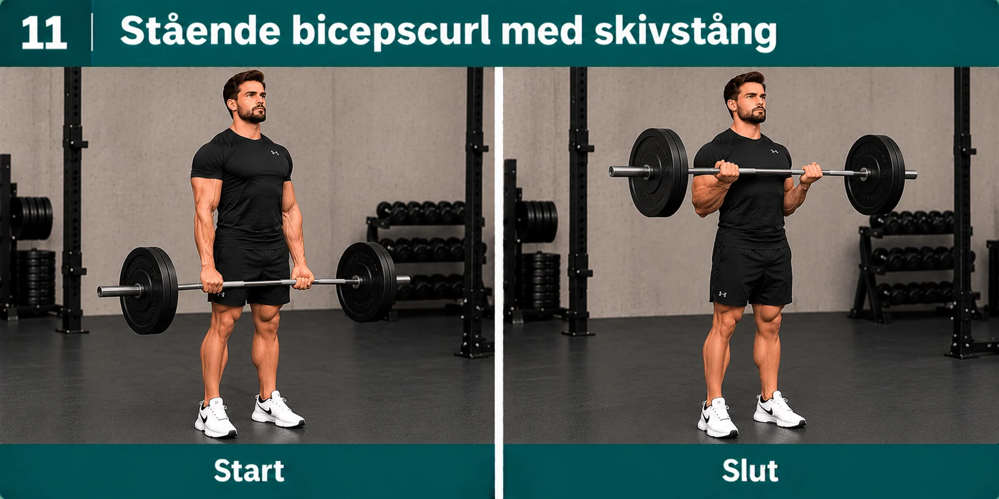
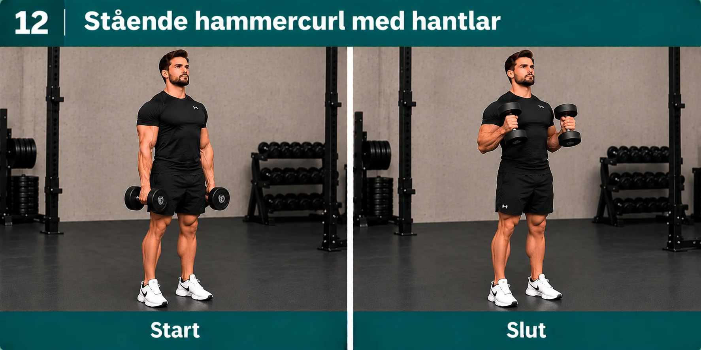
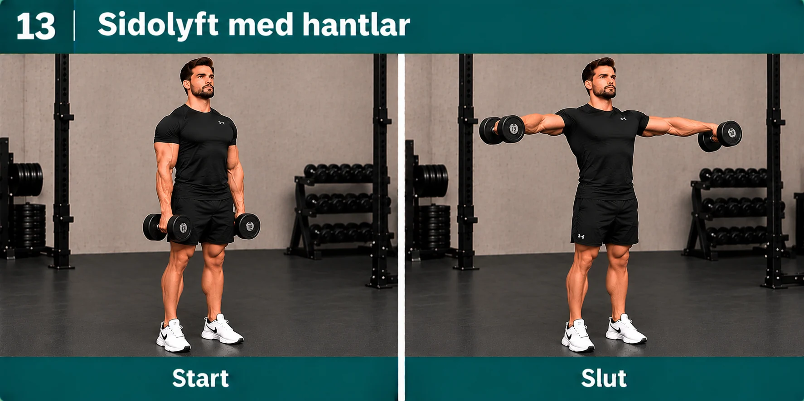
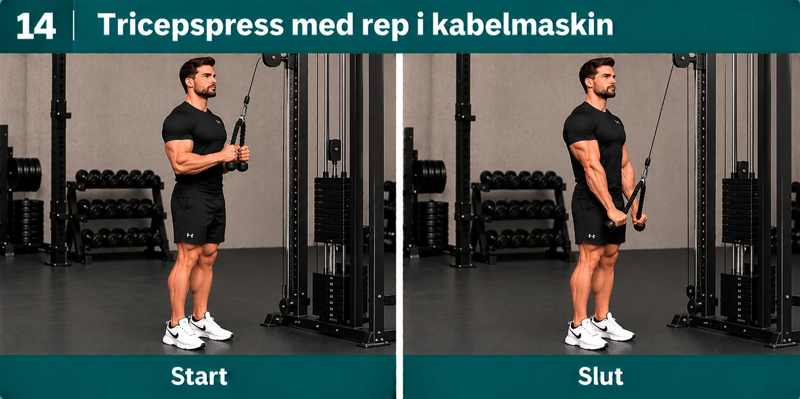
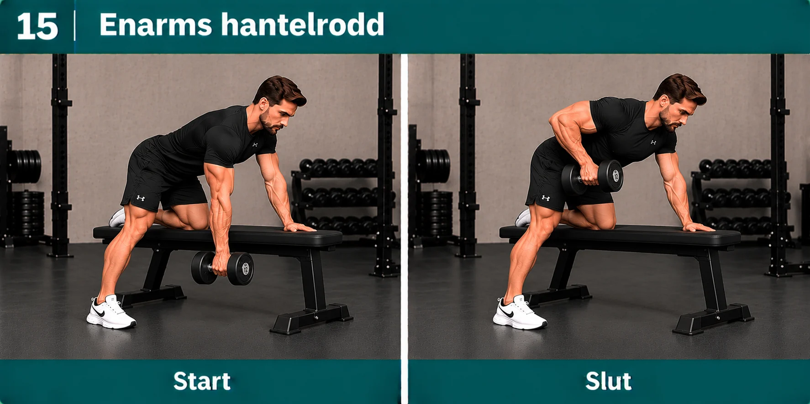

← Till FormresanGodkända träningsbilder
15 av 82 har godkänts i chatten. De fem senaste finns i detta bildarkiv. Tidigare godkända bilder har inte kunnat verifieras som exakt motsvarande filer i denna mellanversion.
11. Stående bicepscurl med skivstång

12. Stående hammercurl med hantlar

13. Sidolyft med hantlar

14. Tricepspress med rep i kabelmaskin

15. Enarms hantelrodd
